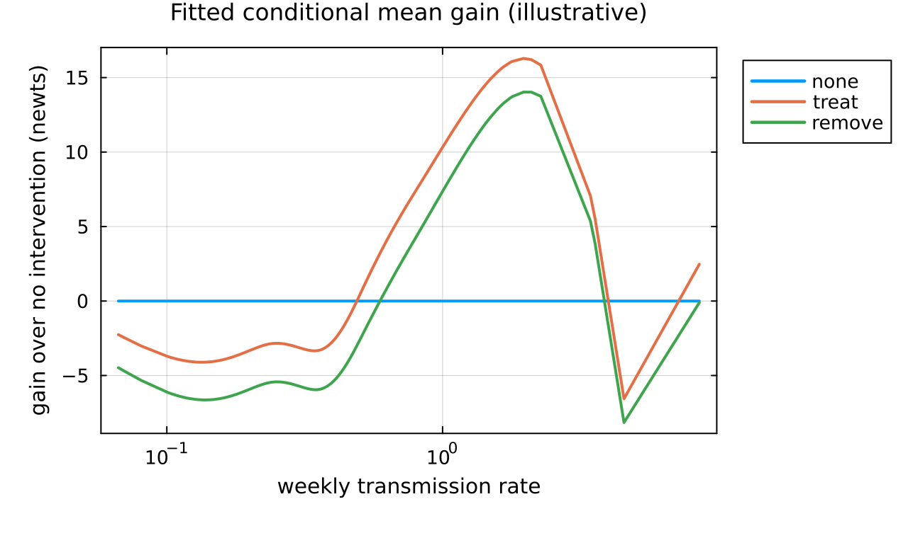
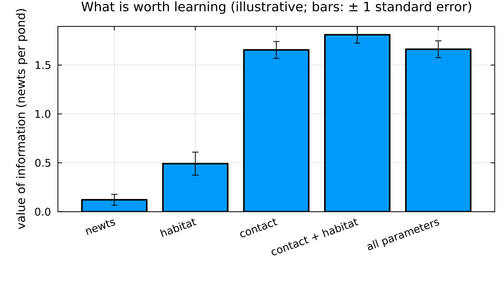

EVPPI from a sample: which parameter is worth learning
Simon Frost
- Motivation
- The problem
- One numeric parameter
- A discrete parameter
- All three, and groups of parameters
- Five or more parameters: a Gaussian process
- A check against closed forms
- What to take away
- Next
Motivation
The expected value of partial perfect information (EVPPI) is the value of learning one parameter, or one group of parameters, exactly and nothing else. Partial information computed it exactly on a finite problem from a partition of the states. With draws of continuous parameters there is no partition to read off. The EVPPI needs the conditional mean of each action’s payoff given the focal parameter, and that has to be estimated.
DecisionAnalysis.jl has several estimators, which share one formula and differ only in how they get the conditional means g:
EVPPI ≈ Σ_i w_i max_a g[a, i] − max_a Σ_i w_i Q[a, i].| method | for | how the conditional mean is obtained |
|---|---|---|
Grouping() | a discrete parameter | the mean within each cell |
StrongOakley() | one numeric parameter | the mean within blocks of the sorted parameter |
Sadatsafavi() | one numeric parameter | the best one or two cut points along the parameter |
SplineRegression() | up to about four parameters | an additive regression spline, built in |
GAMRegression() | up to about four parameters | penalised smooths from GAM.jl, an optional extension |
GaussianProcessRegression() | five or more parameters | a Gaussian process with a linear mean, built in |
Without a method, evppi chooses one by the focal parameters, as the R package voi does: grouping for a discrete parameter, a regression with smooths for up to four numeric parameters, a Gaussian process from five on.
Each returns a VOIEstimate: the value, its standard error and the selection biases, in separate fields.
All numbers are illustrative.
The problem
The pond of newts of the previous vignette: no intervention (the baseline), an antifungal treatment, or removal of animals that test positive. Utility is the number of newts alive at the end of the season. The uncertain parameters are the transmission rate contact, the number of newts and the habitat.
using DecisionAnalysis
using GAM: GAM # loads the extension behind GAMRegression
using Random: Xoshiro
include(joinpath("..", "_common.jl"))
include(joinpath("..", "_toy_pond.jl"))
belief = SampleBelief(toy_draws(Xoshiro(12), 600))
table = outcomes(ToyPond(), TOY_ACTIONS, belief; replicates=10, seed=2026)
alive = IndividualsUtility(:alive)
problem = DecisionProblem(table, alive; baseline=:none)
md_table(["action", "expected newts alive", "expected gain over no intervention"],
[[a, Float64(e), Float64(g)]
for (a, e, g) in zip(action_labels(problem), aggregate(Expectation(), problem),
expected_gain_over_baseline(problem))])| action | expected newts alive | expected gain over no intervention |
|---|---|---|
none | 64.51 | 0 |
treat | 66.02 | 1.51 |
remove | 63.23 | -1.28 |
One numeric parameter
The transmission rate is the obvious candidate. All five methods estimate the same quantity.
contact = ["additive spline (built in)" => evppi(problem, :contact, SplineRegression()),
"Strong and Oakley, blocks" => evppi(problem, :contact, StrongOakley()),
"Sadatsafavi, one cut" => evppi(problem, :contact, Sadatsafavi()),
"Sadatsafavi, two cuts" => evppi(problem, :contact, Sadatsafavi(; separators=2)),
"ten bins of equal weight" => evppi(problem, :contact, Grouping(; bins=10)),
"GAM.jl smooth" => evppi(problem, :contact, GAMRegression())]
voi_table(contact)| estimate | value | standard error | act-now bias | cell-noise bias |
|---|---|---|---|---|
| additive spline (built in) | 1.654 | 0.087 | 0 | - |
| Strong and Oakley, blocks | 1.63 | 0.087 | 0 | - |
| Sadatsafavi, one cut | 1.663 | 0.089 | 0 | - |
| Sadatsafavi, two cuts | 1.663 | 0.089 | 0 | - |
| ten bins of equal weight | 1.638 | 0.088 | 0 | - |
| GAM.jl smooth | 1.503 | 0.086 | 0 | - |
SplineRegression() chooses the size of its basis from the draws: a constant (the payoffs do not depend on the parameter, and the value is zero), a polynomial, or a cubic with one to four knots, whichever has the smallest generalised cross-validation score. A basis that is too large fits the simulation noise and reports value that is not there; one that is too small misses a curve. The estimate records the choice and every score:
chosen = contact[1][2].details
md_table(["degree", "knots", "coefficients", "score"],
[[s.degree, s.knots, s.coefficients, s.gcv] for s in chosen.gcv]; digits=4)| degree | knots | coefficients | score |
|---|---|---|---|
| 0 | 0 | 1 | 60.2022 |
| 1 | 0 | 2 | 44.9407 |
| 2 | 0 | 3 | 30.8938 |
| 3 | 0 | 4 | 27.0048 |
| 3 | 1 | 5 | 25.5051 |
| 3 | 2 | 6 | 25.2909 |
| 3 | 3 | 7 | 25.4578 |
| 3 | 4 | 8 | 25.1645 |
(degree=chosen.degree, knots=chosen.knots)(degree = 3, knots = 4)The estimates agree to within about two standard errors (they share one sample, so their errors are correlated). Learning the transmission rate is worth about a newt and a half per pond.
The methods differ in what they assume. The cut-point method is right when the best action changes at most once (or twice) along the parameter. The blocks and bins assume nothing about shape, but each block mean is noisy, and a maximum over noisy means is too high; more blocks follow the curve better and make that worse. The regressions borrow strength along the parameter. The fitted conditional means show why one cut is enough here:
Q = Float64.(problem.payoff.Q)
w = Float64.(probabilities(belief))
x = parameter_draws(belief).contact
fit = fitted_conditional_means(SplineRegression(), (; contact=x), Q, w)
order = sortperm(x)
plt = Plots.plot(; xlabel="weekly transmission rate", ylabel="gain over no intervention (newts)",
title="Fitted conditional mean gain (illustrative)", xscale=:log10)
for (i, a) in enumerate(TOY_ACTIONS)
Plots.plot!(plt, x[order], fit[i, order] .- fit[1, order]; label=String(a))
end
png_figure(plt)
At low transmission the outbreak fades out by itself, and catching animals only costs some. Above a threshold, treatment pays.
The standard error
The default standard error comes from the per-draw gains of following the fitted policy instead of the act-now action, evaluated on the payoffs themselves. To first order it includes the uncertainty of the fit. A bootstrap over draws, with the fit redone each time, is the check:
boot = evppi(problem, :contact, SplineRegression(); bootstrap=200, seed=1)
md_table(["standard error", "value"],
[["linearised (default)", contact[1][2].standard_error],
["bootstrap, 200 resamples", boot.standard_error]]; digits=3)| standard error | value |
|---|---|
| linearised (default) | 0.087 |
| bootstrap, 200 resamples | 0.081 |
A discrete parameter
habitat takes two values. The conditional mean is the mean within each group, which is what Grouping() computes, and it is the default for a non-numeric parameter.
habitat = evppi(problem, :habitat)
voi_table(["EVPPI of habitat (" * String(habitat.method) * ")" => habitat])| estimate | value | standard error | act-now bias | cell-noise bias |
|---|---|---|---|---|
| EVPPI of habitat (Grouping) | 0.492 | 0.118 | 0 | - |
conditional_problem gives the table behind that number: the expected payoff of each action in each group, with the weight of each group as a finite belief. It is the table a manager would look at if the group were known.
by_habitat = conditional_problem(problem, :habitat)
gain_over_baseline(by_habitat)PayoffTable{Rational{Int64}}: 3 actions × 2 states
| action | open | shaded |
|---|---|---|
none | 0 | 0 |
treat | -1.44559 | 3.0399 |
remove | -4.26471 | 0.260101 |
md_table(["habitat", "share of draws", "best action"],
[[s, Float64(p),
first_choice(decide(restrict_scenarios(by_habitat, [s]), MaxExpectedUtility()))]
for (s, p) in zip(state_labels(by_habitat), probabilities(by_habitat.belief))])| habitat | share of draws | best action |
|---|---|---|
open | 0.34 | none |
shaded | 0.66 | treat |
In an open pond infections clear faster and no intervention holds its own. The EVPPI of habitat is exactly the EVPI of this small table:
(evpi(by_habitat), habitat.value)(983//2000, 983//2000)All three, and groups of parameters
single = ["contact" => evppi(problem, :contact), "newts" => evppi(problem, :newts),
"habitat" => evppi(problem, :habitat)]
voi_table(single)| estimate | value | standard error | act-now bias | cell-noise bias |
|---|---|---|---|---|
| contact | 1.654 | 0.087 | 0 | - |
| newts | 0.122 | 0.056 | 0 | - |
| habitat | 0.492 | 0.118 | 0 | - |
The number of newts is uncertain, and the payoff depends on it strongly: a pond with twice the animals ends with about twice the survivors. Its EVPPI is still small, because knowing it would seldom change the action. Value of information is about the decision, not about the variance of the outcome.
The EVPPI of a group of parameters is the value of learning them together. It is at least the largest single value and can exceed the sum.
groups = ["contact and habitat, spline" => evppi(problem, (:contact, :habitat), SplineRegression()),
"contact and habitat, spline with interaction" =>
evppi(problem, (:contact, :habitat), SplineRegression(; interactions=true)),
"contact and habitat, GAM.jl" => evppi(problem, (:contact, :habitat), GAMRegression()),
"contact and newts, spline" => evppi(problem, (:contact, :newts), SplineRegression()),
"contact and newts, Gaussian process" =>
evppi(problem, (:contact, :newts), GaussianProcessRegression()),
"all three: the regression EVPI" => evpi(problem, SplineRegression()),
"EVPI, plain sample average" =>
evpi(problem, SampleAverage(); noise_correlation=crn_correlation(table, alive))]
voi_table(groups)| estimate | value | standard error | act-now bias | cell-noise bias |
|---|---|---|---|---|
| contact and habitat, spline | 1.709 | 0.085 | 0 | - |
| contact and habitat, spline with interaction | 1.81 | 0.085 | 0 | - |
| contact and habitat, GAM.jl | 1.612 | 0.084 | 0 | - |
| contact and newts, spline | 1.662 | 0.086 | 0 | - |
| contact and newts, Gaussian process | 1.678 | 0.089 | 0 | - |
| all three: the regression EVPI | 1.717 | 0.085 | 0 | - |
| EVPI, plain sample average | 1.914 | 0.082 | 0 | 0.269 |
Transmission and habitat together account for most of the value of perfect information about the parameters. The Gaussian process is shown on the two numeric parameters beside the spline, as a cross-check: it is a different regression of the same payoffs on the same columns, and the two agree within their standard errors. It is not needed for two parameters; its use is for many. The plain sample average also counts the simulator’s own randomness as something to be learned, which no study of the parameters can deliver; its cell-noise bias column says how much its perfect-information term is inflated by that.
labels = ["newts", "habitat", "contact", "contact + habitat", "all parameters"]
values = [single[2][2], single[3][2], single[1][2], groups[2][2], groups[4][2]]
plt = Plots.bar(labels, [Float64(v.value) for v in values];
yerror=[v.standard_error for v in values], legend=false,
ylabel="value of information (newts per pond)",
title="What is worth learning (illustrative; bars: ± 1 standard error)",
xrotation=20, bottom_margin=10Plots.mm)
png_figure(plt)
Five or more parameters: a Gaussian process
An additive spline misses interactions between parameters, and a spline surface with every interaction has too many coefficients once there are more than a few. From five focal parameters on, evppi therefore uses GaussianProcessRegression(): a linear trend plus a smooth random function of all the parameters at once, with one length scale per parameter and a nugget for everything the focal parameters do not explain. The length scales and the nugget are chosen for each action by maximising the marginal likelihood on a seeded subsample of the draws, the process is conditioned on at most max_points draws (1500 by default), and it then predicts the conditional mean at every draw, so the whole sample enters the estimate.
The pond has only three uncertain parameters, so the illustration adds four that a manager might also be unsure of. Each draw now carries a multiplier of the handling mortality, of the capture rate and of the two test errors, and the payoff of each intervention is adjusted by a made-up smooth function of them. This adjustment is invented for the illustration and is not part of the toy model.
rng = Xoshiro(21)
n = length(belief)
extra = (; handling=randn(rng, n), capture=randn(rng, n), sensitivity=randn(rng, n),
specificity=randn(rng, n))
base = payoff_table(table, alive).Q
adjusted = Float64.(base)
adjusted[2, :] .+= 1.5 .* extra.capture .- 2.0 .* extra.handling .+ 0.8 .* extra.capture .* extra.handling
adjusted[3, :] .+= 1.5 .* extra.capture .+ 1.2 .* extra.sensitivity .- 1.0 .* extra.specificity
wide_draws = merge((; contact=belief.draws.contact, newts=Float64.(belief.draws.newts)), extra)
wide = DecisionProblem(PayoffTable(adjusted; actions=TOY_ACTIONS), SampleBelief(wide_draws);
baseline=:none)
five = (:contact, :handling, :capture, :sensitivity, :specificity)
many = ["five parameters (default: Gaussian process)" => evppi(wide, five),
"the same five, additive spline" => evppi(wide, five, SplineRegression()),
"all six" => evppi(wide, (five..., :newts)),
"the four added ones only (spline, by default)" =>
evppi(wide, (:handling, :capture, :sensitivity, :specificity))]
md_table(["focal parameters", "method chosen", "EVPPI (newts)", "standard error"],
[[name, String(e.method), Float64(e.value), e.standard_error] for (name, e) in many];
digits=3)| focal parameters | method chosen | EVPPI (newts) | standard error |
|---|---|---|---|
| five parameters (default: Gaussian process) | GaussianProcessRegression | 1.928 | 0.112 |
| the same five, additive spline | SplineRegression | 1.795 | 0.109 |
| all six | GaussianProcessRegression | 2.067 | 0.113 |
| the four added ones only (spline, by default) | SplineRegression | 0.429 | 0.147 |
The method column shows the rule at work: four parameters go to the spline and five or six to the Gaussian process. An explicit method always overrides it.
A check against closed forms
The estimators are tested against exact enumeration on finite problems in the package’s test suite. A second check is a model with a closed-form answer. The R package voi uses this one in its vignette: two actions with payoffs 0 and p₁ − p₂, where p₁ ~ N(1, 1) and p₂ ~ N(0, 2²). For X normal with mean μ and standard deviation σ, E max(0, X) = μΦ(μ/σ) + σφ(μ/σ), which gives EVPI = 0.4798107, EVPPI(p₁) = 0.0833155 and EVPPI(p₂) = 0.3955931.
rng = Xoshiro(20261123)
n = 40_000
p1, p2 = 1 .+ randn(rng, n), 2 .* randn(rng, n)
normal = DecisionProblem(PayoffTable(permutedims(hcat(zeros(n), p1 .- p2));
actions=[:reference, :new]),
SampleBelief((; p1, p2)); baseline=:reference)
checks = ["EVPI, sample average" => evpi(normal, SampleAverage()),
"EVPI, regression on p1 and p2" => evpi(normal, SplineRegression()),
"EVPPI(p1), spline" => evppi(normal, :p1),
"EVPPI(p1), Strong and Oakley" => evppi(normal, :p1, StrongOakley()),
"EVPPI(p1), Sadatsafavi" => evppi(normal, :p1, Sadatsafavi()),
"EVPPI(p2), spline" => evppi(normal, :p2),
"EVPPI(p2), Strong and Oakley" => evppi(normal, :p2, StrongOakley()),
"EVPPI(p2), Sadatsafavi" => evppi(normal, :p2, Sadatsafavi())]
voi_table(checks; digits=4,
truth=[0.4798107, 0.4798107, 0.0833155, 0.0833155, 0.0833155, 0.3955931, 0.3955931,
0.3955931])| estimate | value | standard error | act-now bias | cell-noise bias | reference |
|---|---|---|---|---|---|
| EVPI, sample average | 0.4871 | 0.0049 | 0 | 0 | 0.4798 |
| EVPI, regression on p1 and p2 | 0.4871 | 0.0049 | 0 | - | 0.4798 |
| EVPPI(p1), spline | 0.0892 | 0.0043 | 0 | - | 0.0833 |
| EVPPI(p1), Strong and Oakley | 0.0927 | 0.0044 | 0 | - | 0.0833 |
| EVPPI(p1), Sadatsafavi | 0.0935 | 0.0044 | 0 | - | 0.0833 |
| EVPPI(p2), spline | 0.4017 | 0.005 | 0 | - | 0.3956 |
| EVPPI(p2), Strong and Oakley | 0.4009 | 0.005 | 0 | - | 0.3956 |
| EVPPI(p2), Sadatsafavi | 0.4012 | 0.005 | 0 | - | 0.3956 |
Every estimate is within about two standard errors of its closed form. The estimates share one sample, so their errors are correlated: they miss on the same side.
The same model with four more parameters checks the Gaussian process, since the closed form extends: with payoffs 0 and p₁ − p₂ + (x₃ + x₄ + x₅ + x₆) / 2 and x₃ to x₆ standard normal, learning a set of parameters leaves a normal conditional mean whose variance is the sum of their contributions.
x = [randn(rng, 4000) for _ in 1:4]
q1, q2 = p1[1:4000], p2[1:4000]
six = DecisionProblem(PayoffTable(permutedims(hcat(zeros(4000), q1 .- q2 .+ 0.5 .* sum(x)));
actions=[:reference, :new]),
SampleBelief((; p1=q1, p2=q2, x3=x[1], x4=x[2], x5=x[3], x6=x[4]));
baseline=:reference)
# E max(0, X) − 1 for X ~ N(1, σ²) is Φ(1/σ) + σ φ(1/σ) − 1; Φ by the midpoint rule.
φ(z) = exp(-z^2 / 2) / sqrt(2π)
Φ(z) = 0.5 + sum(φ((k - 0.5) * z / 20_000) for k in 1:20_000) * z / 20_000
closed(variance) = (σ = sqrt(variance); Φ(1 / σ) + σ * φ(1 / σ) - 1)
gp_checks = ["EVPPI(p1, x3..x6), Gaussian process" => evppi(six, (:p1, :x3, :x4, :x5, :x6)),
"EVPPI(p2, x3..x6), Gaussian process" => evppi(six, (:p2, :x3, :x4, :x5, :x6))]
voi_table(gp_checks; digits=4, truth=[closed(1 + 1), closed(4 + 1)])| estimate | value | standard error | act-now bias | cell-noise bias | reference |
|---|---|---|---|---|---|
| EVPPI(p1, x3..x6), Gaussian process | 0.2245 | 0.0176 | 0 | - | 0.1996 |
| EVPPI(p2, x3..x6), Gaussian process | 0.4957 | 0.0177 | 0 | - | 0.4798 |
These estimators are also compared with the R package voi on the same draws: its so and sal methods agree with StrongOakley and Sadatsafavi to rounding, and its generalised additive model and Gaussian process agree with GAMRegression and GaussianProcessRegression to within a small fraction of a standard error. The scripts and the numbers are in the validation/ directory of the package.
What to take away
evppi(problem, focal, method)estimates the value of learning the named parameters of the draws. Without a method, a non-numeric parameter usesGrouping(), one to four numeric onesSplineRegression()and five or moreGaussianProcessRegression().Grouping,StrongOakleyandSadatsafavineed no regression, and are cross-checks on it.GAMRegressionneedsusing GAM; GAM.jl is not a dependency of the package.conditional_problem(problem, :group)is the payoff table by group, and its EVPI is the EVPPI of the group.- A parameter can drive the outcome and be worth nothing to learn. EVPPI ranks uncertainties by what resolving them does for the decision.
- The standard error is beside the value, never in it.
bootstrap = Bchecks it by refitting on resampled draws. - Regression EVPI, on all the parameters, is the value of information about the parameters. The plain sample average also counts simulation noise.
Next
Learning a parameter exactly is an ideal. A real study gives data. EVSI from a sample values a study before it is run.